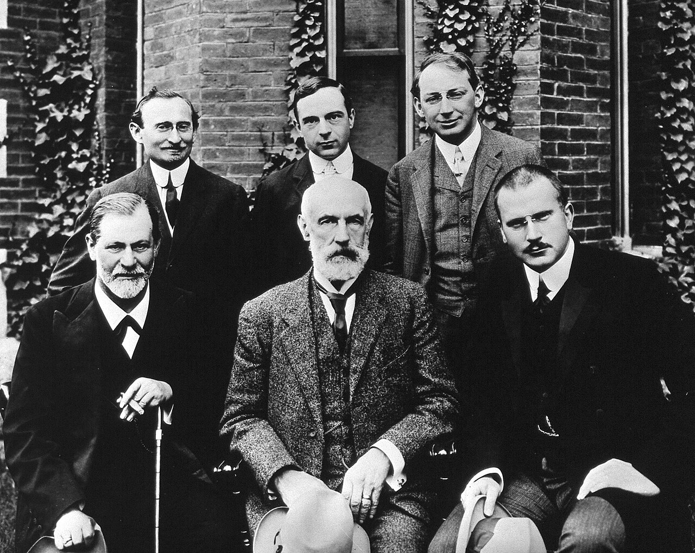
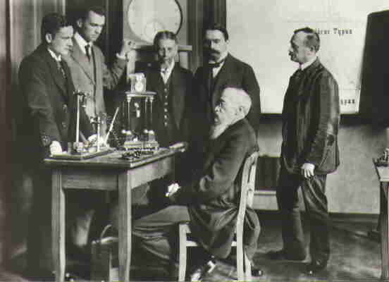
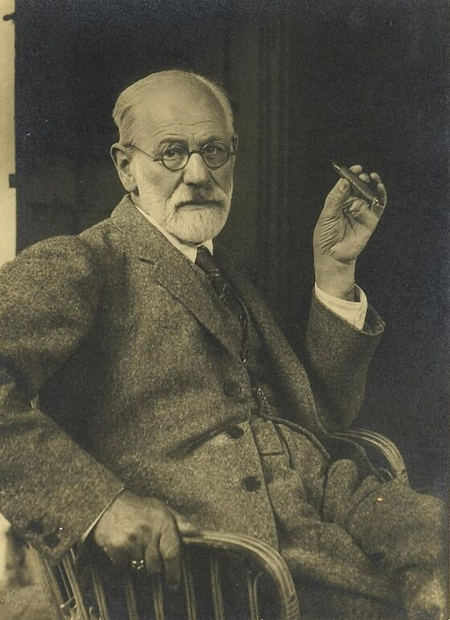

Créditos de imágenes
Las fotografías históricas proceden de Wikimedia Commons y las actuales, de Unsplash. Aquí figuran su autoría y su licencia.
Las imágenes de dominio público o con licencia Creative Commons se reproducen respetando sus condiciones; las licencias CC BY y CC BY-SA exigen citar la autoría, que se indica junto a cada imagen y en esta lista. Las fotografías de Unsplash se usan con la licencia de Unsplash.
Si eres autor de alguna imagen y ves un error en la atribución, escríbenos a partenopides@gmail.com.
| Imagen | Autoría y licencia | |
|---|---|---|
 | Sigmund Freud, G. Stanley Hall y Carl G. Jung (sentados) con Abraham A. Brill, Ernest Jones y Sándor Ferenczi en la Universidad Clark, 1909 | Dominio público · Wikimedia Commons |
 | Participantes en la conferencia de la Universidad Clark, septiembre de 1909: entre otros, William James, Sigmund Freud, Carl G. Jung y Edward Titchener | Schervee & Bushong · Dominio público · Wikimedia Commons |
 | Wilhelm Wundt y su grupo de investigación en Leipzig, hacia 1880 | Dominio público · Wikimedia Commons |
 | William James | Dominio público · Wikimedia Commons |
 | Sigmund Freud, fotografiado por Max Halberstadt | Max Halberstadt · Dominio público · Wikimedia Commons |
 | Un joven dormido sobre la mesa de trabajo, junto al portátil | Foto: Vitaly Gariev / Unsplash |
 | Una mujer sentada junto a la ventana, pensativa | Foto: Kelly Sikkema / Unsplash |
 | Silueta de una pareja sentada frente a una ventana | Foto: Etienne Boulanger / Unsplash |
 | Una estudiante en una gran biblioteca universitaria | Foto: Zoshua Colah / Unsplash |
 | Varias manos sosteniendo teléfonos móviles | Foto: Robin Worrall / Unsplash |
 | Un grupo de amigos jóvenes al aire libre | Foto: Tim Mossholder / Unsplash |
 | Un árbol otoñal visto a través de una ventana | Foto: Radek Sobczyk / Unsplash |
 | Un hombre mayor sentado solo en un banco | Foto: Mykyta Martynenko / Unsplash |
 | Un médico conversa con una madre y su hijo en la consulta | Foto: Vitaly Gariev / Unsplash |
 | Un lago en calma por la mañana, con montañas al fondo | Foto: Neil Thomas / Unsplash |
 | Un libro abierto sobre la mesa | Foto: Ivona Rož / Unsplash |
 | Una mano infantil apila bloques de colores | Foto: La-Rel Easter / Unsplash |
 | Una multitud en la calle, en blanco y negro | Foto: Rob Curran / Unsplash |
 | Dos amigas conversan sentadas a una mesa | Foto: Brooke Cagle / Unsplash |
 | Un corredor en una carretera al amanecer | Foto: Isaac Wendland / Unsplash |
 | Una pared de retratos de personas distintas | Foto: David Kester / Unsplash |
 | Representación digital de un cerebro | Foto: Milad Fakurian / Unsplash |
 | Un rompecabezas al que le falta una pieza | Foto: Tanja Tepavac / Unsplash |
 | Un signo de interrogación | Foto: Towfiqu barbhuiya / Unsplash |


.jpg){kind=link}